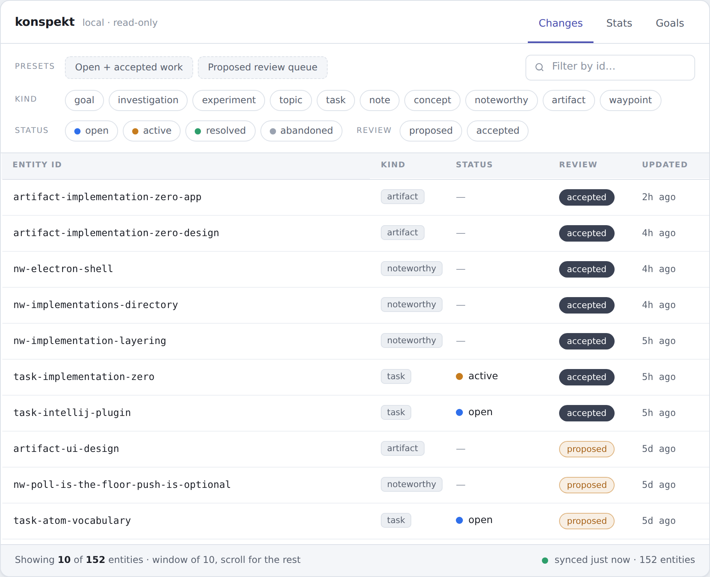
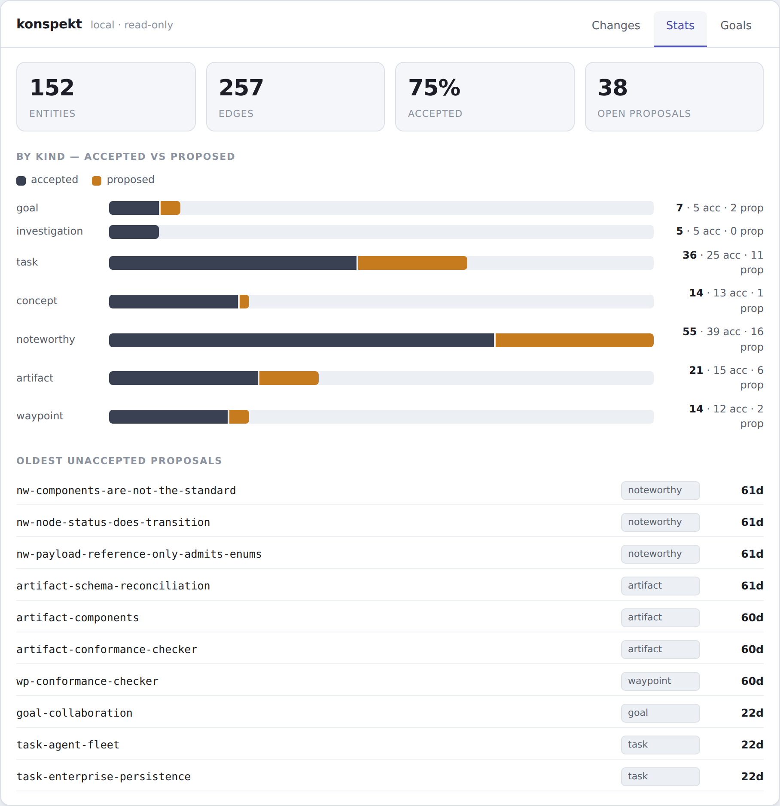
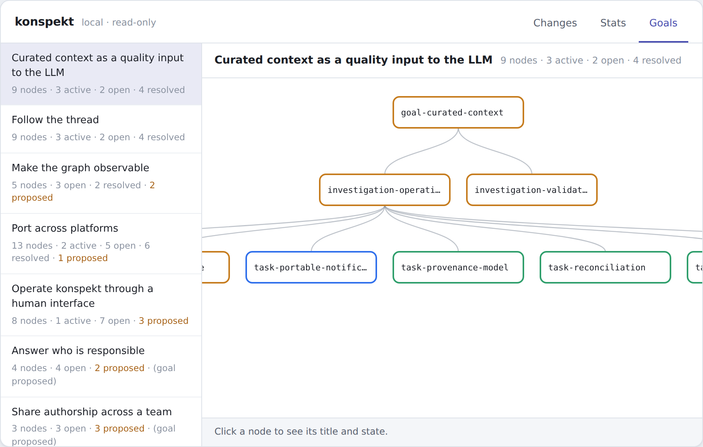
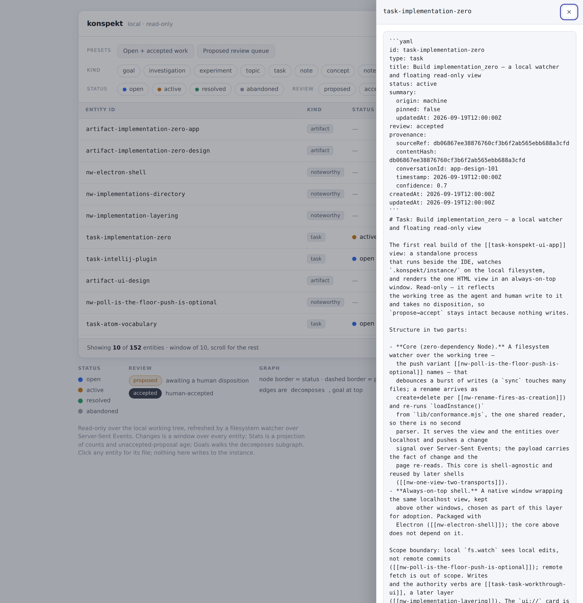
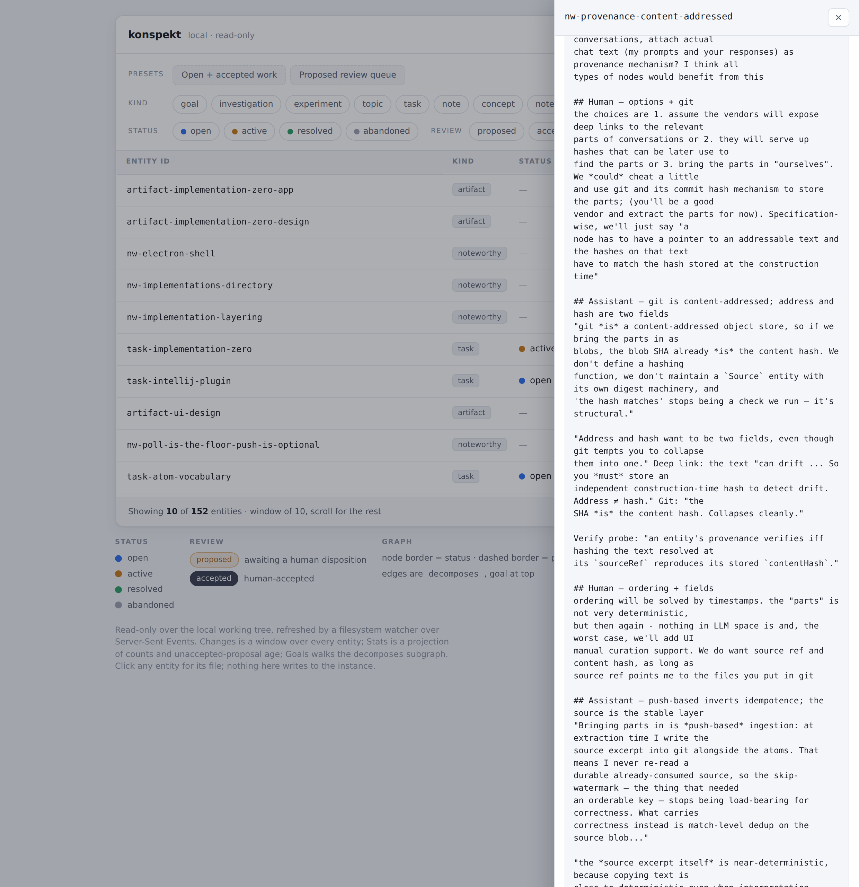

A window that sits beside the session and shows the project state as the agent and I write to it. Three tabs and a detail panel, updating live.
A ten-row window over the whole project, newest change first. Filter by kind, status, and review, or jump to a preset: open accepted work, or the proposed review queue.

152 entities, 257 edges, 75% accepted, 38 open proposals. Accepted versus proposed by kind, and the oldest proposals still waiting on a human decision.

Each goal opens into its decomposes subgraph, drawn as a layered diagram. A node's border is its status; a dashed border means it is still only proposed.

Click any row or graph node for the whole atom: its type, status, and review state, the provenance pointer, and the body the agent wrote. Read-only, like everything here.

Open any atom for the verbatim exchange it came from: the human and the assistant working the decision, turn by turn. Both sides, never paraphrased, each hop checked by re-hashing the source against its recorded hash.
